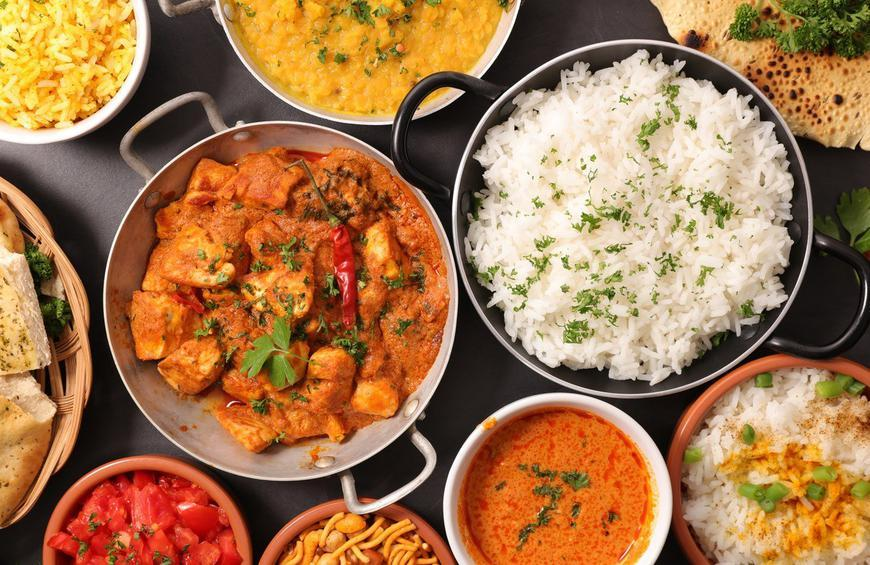

Food Connoisseur
I absolutely love trying different types of food. When I was about 12 years old I tried alligator nuggets in Florida, and I was
surprised to find that it didn't taste that bad. In my free time, I love watch obnoxious "This is Insider Food" videos where they
try different types of food. Indian food is part of my culture, so that's why it is on here. I love Italian and Chines though, and
I'll never say no to a good piece of fried chicken. Below you'll also find pictured a restaurant in Sausalito, California where I
was able to eat the best Fish and Chips dish I had ever tried. I also do cook (and very well so if you ask my family).
|  |